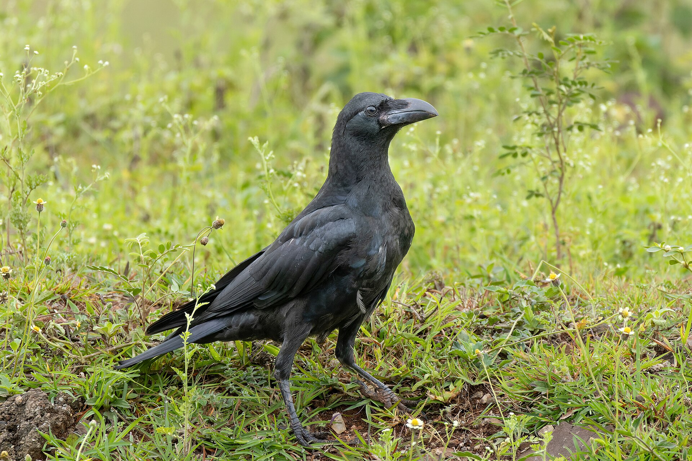

第 9 章
乌鸦的午夜食堂
上海市绿化和市容管理局2019年第三季度的一份投诉分类统计表显示，在“其他环境扰民”项目下，出现了一个此前三年均未单独列出的子项：乌鸦相关投诉。全年累计五十二起，其中四十一起来自中

心城区，投诉时段高度集中在凌晨四点至六点之间，内容以“垃圾散落”和“清晨噪音”为主。这份内部简报没有作出进一步解释，只在备注栏里标注了一行字：“建议相关街道关注环卫作业时序安排。”
这份文件不会进入公开发布的年度报告，也不会成为城市管理决策的主要依据，但它记录了一个正在发生的事实：大嘴乌鸦已经进入了上海的城市时间表，并且与人类的时间安排产生了可量化的摩擦。五十二起投诉是一个很小的数字——对比同年度流浪猫投诉超过三千起、广场舞噪音投诉超过一万起——但它的出现本身就标志着某种阈值的跨越。乌鸦不再只是城市天际线上偶尔掠过的黑色剪影。它们开始触发行政系统的响应机制，成为需要被“关注”和“安排”的对象。
这种关注的起点，可以追溯到更早的时刻。凌晨四点半，杭州拱墅区湖墅南路。一辆压缩式垃圾清运车拐进背街小巷，车灯扫过路边的梧桐树冠。十一只大嘴乌鸦已经等在枝头。它们不是偶然停栖在那里——根据杭州市环境卫生管理处的作业记录，这辆车每周二、四、六凌晨四点二十分至四点四十五分之间经过这个清运点，过去三个月没有一次迟到超过五分钟。
乌鸦的集结时间与此精确匹配：垃圾车到达前十到十五分钟内出现在枝头，清运结束后五到八分钟内散尽。北京海淀区学院路街道的环卫台账记录了同样的模式。东京都环境局2017年的调查报告给出了一个统计数字：新宿区某清运点鸦群集结时间与垃圾车实际到达时间的皮尔逊相关系数达到0.91。
这些数字指向同一个事实。大嘴乌鸦不是被垃圾吸引来的机会主义觅食者，而是按照一套精确的时间表行动的有组织觅食者。这套时间表不是它们自己发明的，而是从人类市政作业的节奏中提取出来的。乌鸦做的，是把人类的钟表时间翻译成了自己的觅食节律。
这就把城市鸟类的故事从白天推入了夜晚与清晨的边界。此前各章处理的物种，城市生活基本局限在日出到日落的时间框架内。夜鹭虽然活动于夜间，但它的觅食依赖的是水体生态系统的自然节律，而非人类活动的时间表。大嘴乌鸦不同。它主动跨越了昼夜边界，把觅食高峰前移到黎明前的黑暗时段，在人类醒来之前完成一天中最重要的一轮能量摄取。城市生态系统已经不再是一个只在白天运转的系统，它变成了二十四小时的全时相机器，而大嘴乌鸦是这台机器上第一个被确认的夜班操作员。
要理解这个策略为什么有效，需要先看形态基础。大嘴乌鸦（Corvus macrorhynchos）是东亚鸦属中体型最大的成员之一，体长可达五十六厘米，翼展接近一米。在城市常见鸟种中，这个体型仅次于少数猛禽和大型水鸟，已经处于食物链的顶端区域。体型优势直接转化为取食能力：人类丢弃的食物垃圾通常包裹在塑料袋、纸盒、泡沫餐盒或保鲜膜里。白头鹎的喙太细，只能啄食已经暴露的食物颗粒；珠颈斑鸠的喙太软，连塑料袋都戳不破；喜鹊的喙够硬但形状直而尖，适合刺穿而非撕扯。大嘴乌鸦的喙厚实、侧扁、上喙前端微微下弯，咬合力足以撕开多层塑料袋、掀翻快餐盒盖、从瓦楞纸箱上扯下整块纸板。
日本鸟类学家樋口広芳在1990年代的田间实验提供了可比较的数据：将等量食物分别装在纸袋、塑料袋和锡纸包裹的容器中，放置在东京公园内，大嘴乌鸦打开包装的成功率是百分之百，时间中位数不到四十秒；喜鹊的成功率是百分之六十七，平均耗时超过三分钟；其余鸟种基本无法独立打开任何一层包装。
但喙只是硬件。真正让大嘴乌鸦占据独特生态位的是它的行为可塑性，而其中最核心的一环，是对时间的编程能力。乡村生境中的大嘴乌鸦是典型的日行性鸟类，活动高峰集中在日出后两小时和日落前两小时，夜间完全停歇。城市种群的活动节律则发生了显著位移。日本山形大学的研究团队在2000年代初期对比了仙台市区和周边山林中大嘴乌鸦的日活动节律，发现城市种群在日出前一到两小时就开始了第一轮觅食活动，而乡村种群此时仍然栖息在夜栖树上。更关键的是，城市乌鸦的清晨觅食高峰与城市垃圾清运作业的时间表高度耦合。
仙台市大部分居民区的垃圾收集时间集中在上午六点至八点之间，乌鸦的清晨觅食高峰恰好出现在收集时间的前三十分钟至前一小时内。这意味着乌鸦不是在垃圾被集中堆放后才开始觅食，而是赶在垃圾车到达之前抢先翻捡居民前一晚放置在收集点的垃圾袋。这个时间差至关重要。一旦垃圾被清运车压缩装车，所有可获取的食物资源就永久消失了。乌鸦必须在那个狭窄的时间窗口内完成搜索、选择、取食和撤离。
大阪市立大学的研究者曾在2005年追踪了十二只佩戴无线电发射器的大嘴乌鸦，记录它们一周内的活动轨迹。数据显示，这些乌鸦在清晨四点至六点之间的活动范围高度集中在已知的垃圾收集点周围两百米半径内，而在上午九点之后，活动范围扩大到三至五公里，觅食行为变得分散和随机。乌鸦把一天中最有价值、最可预测的资源脉冲安排在了人类醒来之前的那段黑暗里，然后在整个白天用零散的觅食来补充。这就是时间生态位分化的核心逻辑。
城市白天的生态空间已经被喜鹊、灰喜鹊、八哥、白头鹎、麻雀等十余种常见鸟种瓜分殆尽。日间食物网高度饱和，任何一种新加入的竞争者都必须付出更高的竞争成本：更长的警戒时间、更频繁的冲突、更低效的取食。但凌晨四点至五点半这个时段，上述所有日行性鸟种都处于休息状态。夜鹭虽然也在夜间活动，但觅食生境集中在城市河道和水体边缘，以鱼类和水生无脊椎动物为主，与乌鸦的垃圾觅食不存在直接资源重叠。凌晨的垃圾堆是一个几乎无人竞争的生态位空窗。大嘴乌鸦做的，不过是把自己的闹钟往前调了两个小时。
这个“调闹钟”的过程不是个体试错的结果，至少不完全是。鸦科鸟类具有复杂的社会学习机制。樋口広芳在东京的长期观察记录了一个关键现象：当某个清运点的垃圾收集时间因市政调整而改变时，栖居在该区域内的鸦群通常只需要三到七天就能完全同步新的时间表。个体的试错学习不可能这么快。一只乌鸦不可能在三天内独自摸清一套每周只执行三次的时间规律。更合理的解释是，群体中的某些个体首先发现了变化，其余个体通过观察同类的出发时间、飞行方向和觅食成功后的行为线索，迅速完成了信息传递。
这种社会学习能力还体现在另一个行为上：工具使用。日本小诸市的大嘴乌鸦学会了将核桃放置在交通信号灯前的车行道上，等待过往车辆碾碎外壳，然后在红灯亮起时飞下去捡食果仁。这个行为最早在1975年被零星记录，到1995年已经在日本至少八个城市的乌鸦种群中被观察到。它不是本能——山区的乌鸦不会这么做，因为山区没有信号灯和稳定的车流。它是城市乌鸦独立发明并通过社会学习扩散的行为创新。
更重要的是，这个行为同样嵌入了时间维度：乌鸦只在车流密度适中的时段执行这个策略，避开早晚高峰的连续车流，也避开深夜车辆稀少的空窗期。它们选择的时间窗口通常是上午九点半至十一点和下午两点至四点，即人类通勤潮退去之后的交通平峰期。
工具使用、社会学习、时间编程，这三者叠加在一起，把大嘴乌鸦推到了城市生态网络中的一个独特位置。它是目前已知唯一能够系统性地利用城市时间结构作为觅食资源的鸟类。喜鹊再聪明，主要觅食时段仍然局限在日出到日落之间。夜鹭再适应城市，夜间觅食依赖的仍是水体生态系统的自然节律。只有大嘴乌鸦做到了将自身行为节律与人类市政作业的精确时间表进行耦合。这是本章的核心论断：大嘴乌鸦把城市的时间结构当作一种资源来开发，它的成功标志着城市生态系统已经从日间主导走向了全时相运转。
但这个策略并非没有代价。凌晨觅食意味着乌鸦必须在黑暗中作业，而城市的夜间光照环境复杂到近乎混乱：路灯的钠黄光、LED广告屏的冷白光、住宅楼窗户透出的暖色灯光、偶尔扫过的车灯。这些光源在乌鸦的视网膜上投射出一个斑驳陆离的世界。鸟类视觉系统原本适应的是自然光环境：黎明和黄昏的渐变光、林冠层下的斑驳光斑、开阔水面的均匀反射光。没有任何一种鸟类的眼睛是为霓虹灯和LED广告牌进化出来的。城市乌鸦在这个光环境中觅食，依赖的可能不是视觉的精确辨识，而是对食物位置的空间记忆和对塑料袋触感、气味线索的多模态整合。
东京大学的研究者在2012年的一项实验中训练乌鸦在黑暗环境中依靠触觉和空间记忆定位食物，结果发现，有城市觅食经验的个体在黑暗中的觅食效率显著高于从山区捕获的同类个体。这暗示城市乌鸦的感官代偿已经在种群水平上发生了可测量的偏移：当视觉因光污染而不可靠时，触觉和空间记忆接管了觅食任务。
感官代偿这个概念在这里被推向前台。此前各章已经看到不同鸟种如何在城市的感官压力下作出调整：白头鹎提高鸣声频率对抗低频噪音，乌鸫调整晨鸣时段避开交通早高峰的声学掩蔽，夜鹭在灯光污染的水体边缘重新校准捕食距离判断。但大嘴乌鸦的案例走得更远。它不是在单一感官通道上进行补偿性调整，而是将整个时间感知系统重新编程，把人类活动的节律内化为自身觅食行为的触发器。这不是被动适应噪音或光污染的生理应激反应，而是主动预测资源脉冲出现时间的认知行为。
一只乌鸦不需要理解什么是“周二凌晨四点半”，但它的大脑显然编码了某种时间间隔预期机制，能够在垃圾车到达之前的那个特定时刻唤醒觅食动机。这种能力让人不安。人类对自己创造的时间秩序有一种近乎本体论的依赖，我们默认只有自己才拥有钟表时间、日历时间和周期性的制度时间。动物活在另一种时间里：昼夜节律、季节周期、潮汐涨落。但当乌鸦开始匹配市政环卫作业的时间表时，这两套时间系统发生了交叠。乌鸦进入了人类的时间秩序，不是作为被动的受管理者，而是作为主动的利用者。它们在人类设定的时间框架内找到了自己的生态位，然后反过来迫使人类调整管理策略。
东京是这场冲突最典型的案例。1985年东京二十三区的大嘴乌鸦繁殖个体数估计约为七千只，到2000年已超过两万只，十五年增长近三倍。
种群增长带来的后果迅速溢出到公共空间：垃圾收集点的塑料袋被撕破后散落街道，清晨的鸦群鸣叫引发居民投诉，最引人关注的是2001年至2003年间多起乌鸦攻击行人的事件报道，其中几起涉及幼童在公园或上学途中被俯冲的乌鸦啄伤头部或面部。
这些所谓“攻击”事件需要谨慎描述：大嘴乌鸦在繁殖期具有强烈的领域防御行为，亲鸟会对靠近巢树的潜在威胁进行俯冲警告和接触性驱赶。这不是掠食行为，也不是无差别的攻击性。
问题在于，城市环境中巢树可能就在幼儿园围墙外的银杏树上，或者小学上学路线上的行道树中。人类幼童的正常活动路径恰好穿过了乌鸦定义的威胁半径。
东京都政府的应对措施试图从资源端切断乌鸦种群增长的动力。2004年起推广使用防乌鸦专用垃圾袋，黄色半透明塑料袋的外层涂有苦味涂层，乌鸦啄咬后会因味觉厌恶而放弃。同时部分区域的垃圾收集时间从清晨提前到深夜，试图在乌鸦的活动高峰之前完成清运。这些措施在短期内产生了效果：2005年东京二十三区的大嘴乌鸦数量回落至约一万五千只，此后逐年缓慢下降，但仍远高于1985年的基线水平。乌鸦没有被驱逐出城市，它们只是被压缩到了一个人类勉强可以接受的密度水平上。
这个结果本身就说明问题。大嘴乌鸦与城市管理之间的冲突不是偶发的、可消除的摩擦，而是两种时间策略之间的结构性张力。人类希望垃圾在自己设定的时间内被高效清运，在公众醒来之前恢复街道的整洁面貌；乌鸦发现了这个时间表，把它当作开饭铃来使用。人类调整时间表以避开乌鸦；乌鸦重新学习新的时间表并再次同步。这是一场关于时间的军备竞赛，而到目前为止，双方都没有退出。
在中国城市中，类似的冲突正在逐渐浮现。南京市鼓楼区某街道办事处在2021年处理过一起居民投诉，投诉人反映“每天凌晨四点多就被乌鸦叫声吵醒”，街道的回复是“已协调环卫部门调整垃圾清运时间”。记录只到这一步，没有后续跟踪数据表明调整是否有效，也没有信息显示乌鸦是否在几周后重新适应了新的时间表。但基于东京和首尔的前例，合理的推断是：调整的窗口期很短暂，乌鸦迟早会回来。
这就引出了垃圾链概念在本章的具体展开。前几章已经看到，人类食物垃圾构成了城市生态系统中一条高能量通量的营养链路：从人类厨房到垃圾桶到垃圾收集点再到清运车和填埋场或焚烧厂，在这条链路的每一个节点上都有鸟类试图截取能量。麻雀在早餐摊位的桌椅下捡拾掉落的饼屑，白头鹎啄食行道树上残留的秋果，夜鹭在夜市结束后的河岸边捕食被丢弃的鱼杂。
这些都是垃圾链的组成部分。但大嘴乌鸦的独特之处在于，它不是在垃圾链的某个静态节点上取食，而是追踪着垃圾链的时间动态。它知道能量什么时候流动，流动到哪里，流动多久。垃圾链在乌鸦眼中不是一堆静止的废弃物，而是一个有节奏、有周期、可预测的能量脉冲序列。
这轮凌晨窗口的能量回报有多高？一项基于东京数据的粗略估算可以帮助建立数量级概念。一个标准居民区垃圾收集点每周三次清运，每次清运前放置在收集点的垃圾袋总数约为二十至四十袋，其中约有三成至五成的袋子含有可被乌鸦取食的厨余残渣。每袋可获取的食物干重估计在五十至一百五十克之间，能量值约在两百至六百千卡之间。
一只成年大嘴乌鸦日均能量需求约为两百五十至三百千卡。这意味着一个清晨觅食窗口的能量回报足以覆盖一只乌鸦一日能量需求的大部分甚至全部，剩余的日间觅食不过是对特定营养素的补充和对意外资源的利用。这不是边缘性的食物补贴，而是城市生态系统向一个特定物种提供的稳定、高能量、低竞争的资源基础。
低竞争不等于无风险。垃圾链的高能量通量伴随着高病原体风险。厨余垃圾中可能含有腐败变质的食物残渣，滋生大量细菌和真菌。塑料袋内部温暖潮湿的微环境是病原体繁殖的理想场所。乌鸦频繁接触这些物质，其免疫系统必须承受比乡村同类更高的病原体暴露压力。目前还没有针对城市与乡村大嘴乌鸦免疫功能的系统比较研究，但针对欧洲城市鸦科鸟类的几项初步调查显示，城市种群的血液中应激蛋白和免疫球蛋白水平普遍高于乡村种群，暗示着一种慢性免疫激活状态。这是垃圾链的隐性成本：能量便宜，但身体要付出代价。
文化象征层面的代价同样存在。大嘴乌鸦在东亚文化传统中占据着一个暧昧不清的位置。在日本神道教传统中，乌鸦被视为神使，熊野三山的八咫乌传说就是最著名的例证；在中国古代文化中，乌鸦曾被视为孝鸟，“慈乌反哺”的典故出现在《说文解字》和《本草纲目》等文献中。
但汉代以后，乌鸦的象征意义逐渐向负面漂移，黑色羽毛、食腐习性、粗哑鸣声使它逐渐与死亡、不祥等意象绑定。
到了现代城市生活中，这种负面象征被进一步放大：翻垃圾的乌鸦被视为肮脏和混乱的象征，清晨聚集的鸦群引发噪音和卫生投诉，偶发的领域防御行为被媒体描述为“攻击”甚至“袭人”。东京2000年代初期的乌鸦恐慌在很大程度上是被媒体报道放大的，实际受伤案例数量有限且伤情轻微，但“都市乌鸦袭击市民”的叙事框架具有强烈传播力，迅速固化为公众认知。
这种文化张力使得大嘴乌鸦的城市管理问题比单纯的生态调控更为复杂。当居民投诉“乌鸦太多”时，他们真正抱怨的可能不仅仅是垃圾散落或清晨噪音，还有那些黑色身影所唤起的、根植于文化记忆深处的不安感。反过来，当保护人士反对扑杀时，他们援引的也不仅仅是生态科学数据，还有关于人与非人物种在城市空间中共存权利的伦理主张。大嘴乌鸦夹在这两股力量之间，既不是纯粹的害鸟，也不是纯粹的益鸟。它的成功本身成为了争议的来源。
现在回到那个凌晨的场景。同一时刻，上海杨浦区国定路某小区门口的三个垃圾桶旁，六只大嘴乌鸦正在翻捡前一晚居民投放的垃圾袋。北京海淀区魏公村的一条小巷里，八只大嘴乌鸦已经完成了对一个清运点的检查，正在飞往下一个已知收集点。武汉武昌区珞珈山路某高校食堂后门，十二只大嘴乌鸦正在等待食堂员工推出前一晚的泔水桶。成都武侯区科华北路的一个商业综合体后巷，五只大嘴乌鸦正在撕开一个被餐饮商户提前放置在路边的黑色塑料袋。这些场景在同一时刻上演，跨越多个城市、多个气候带、多种城市形态。它们不是同一群乌鸦，但它们执行的是同一套时间程序。
这套程序不是写在基因里的本能，而是通过社会学习在城市种群中代际传播的行为传统。每一只年轻的乌鸦在跟随亲鸟完成第一个冬季的清晨觅食时，都在学习这座城市的时间地图：哪个清运点几点有车来，哪条路线效率最高，哪个垃圾桶的食物最丰富，哪个区域的垃圾袋最难撕开。这些知识不是个体试错的产物，而是整个群体积累、筛选、传承的信息遗产。从这个意义上说，每一座城市的每一群大嘴乌鸦都是一个活的文化库，不是人类意义上的文化，但确实是一套通过社会学习维持的非遗传行为传统。
这套传统面临的风险同样真实。城市设施持续更新：垃圾桶设计改良为防翻盖样式，垃圾收集点从露天堆放改为封闭式箱体，部分区域推行垃圾定时定点投放制度以减少露天暴露时间。这些措施在改善城市环境卫生的同时，也在逐步侵蚀大嘴乌鸦赖以成功的资源基础。
如果垃圾桶全部换成防翻盖设计，如果垃圾袋全部采用防撕咬材料，如果清运时间全面提前到深夜并做到即时装车不在地面停留，那么清晨窗口就将关闭。这不是预言，而是已经在部分城市区域发生的现实。东京都推广防乌鸦垃圾袋后，受影响区域的乌鸦清晨觅食时长下降了约百分之四十，部分个体被迫转向白天觅食，进入与喜鹊、八哥等日行性鸟种的直接竞争。
竞争的结果并不总是对乌鸦有利。白天的城市生态空间竞争激烈，喜鹊的社会组织和领域防御能力不容小觑，八哥虽然个体较小但群体数量庞大且行动协调性高。乌鸦在白天的觅食效率远低于凌晨窗口期，不是因为白天食物变少，而是因为竞争对手变多。时间生态位分化一旦被打破，乌鸦的优势就会大幅缩水。这正是伯劳那一章结尾留下的问题的另一面：伯劳依赖的是城市物理结构的稳定性，而乌鸦依赖的是城市时间结构的稳定性。两种策略都有效，但也都脆弱于同一个根源：城市环境是人类持续干预和改造的动态系统，不存在真正的稳定状态。
最后，用一组数字收束这一章。东京二十三区大嘴乌鸦繁殖个体数：1985年约七千只，2000年约两万一千只，2005年约一万五千只，2015年约一万二千只，经历了爆发式增长和人工抑制后稳定在高于历史基线的水平上。仙台市城市与乡村大嘴乌鸦清晨觅食启动时间差：城市种群日出前九十一分钟，乡村种群日出后十二分钟，两者相差一百零三分钟。杭州拱墅区某清运点三个月内垃圾车到达时间标准差小于五分钟，同一清运点鸦群集结时间平均提前量十四分钟。东京都2004年防乌鸦垃圾袋推广后受影响区域清晨觅食时长下降约百分之四十。
上海市中心城区2018至2021年涉及大嘴乌鸦的市民投诉案件数量：2018年三十七起，2019年五十二起，2020年六十一起，2021年七十三起。日本小诸市交通信号灯处乌鸦利用车辆碾碎核桃行为的首次记录时间为1975年，1995年时该行为已在日本至少八个城市的乌鸦种群中被记录到。一只成年大嘴乌鸦日均能量需求约两百五十至三百千卡。一个标准居民区垃圾收集点单次清运前可被取食的厨余残渣能量总值约四千至一万二千千卡。大嘴乌鸦在东亚城市中的密度：东京建成区每平方公里十二至十八对，周边阔叶林生境每平方公里三至五对。
这些数字勾勒出一幅清晰的图景：大嘴乌鸦在城市中的成功是可量化的，它带来的摩擦同样可量化。成功依赖于一个关键变量——时间。时间决定资源何时可用，决定竞争者是否在场，决定策略是否有效。当时间结构稳定时，乌鸦的策略高效、可预测、几乎无懈可击。当时间结构被人为调整时，策略就会出现裂缝，个体必须重新学习、重新适应、重新同步。这座城市在凌晨四点半属于乌鸦，但这份归属权每隔几年就可能被一纸新的环卫作业规范收回重审。
而在城市的另一个维度上，声音的维度，另一种鸟正在做着类似的事情。它不像乌鸦那样操纵时间，但它学会了操纵人类听觉景观中最密集、最混乱的那一部分。那是另一个故事了。